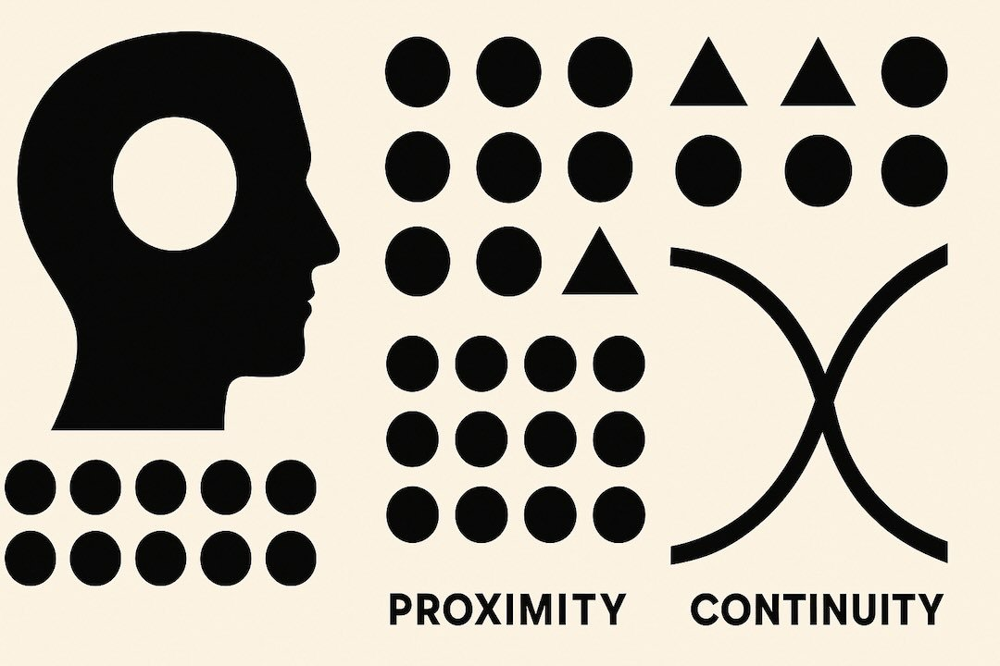

La Ley de Proximidad en el Diseño
La Ley de Proximidad es un principio de la Gestalt que establece que nuestro cerebro tiende a agrupar elementos que están cerca unos de otros.

En el diseño de interfaces, esta ley es vital para organizar menús y formularios.
Escrito por: Especialista en UI de Cúbica